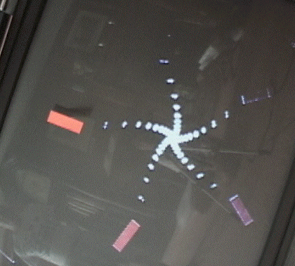

|  |
| Here is one example. |
| The tape seeds the spiral. By this we mean that the tape stays at the same place on the screen, so the camera continues to see it and the monitor to project it at the same place. |
| The angle and zoom of the camera produce a second image of the tape, slightly smaller and ratated. |
| The camera sees the smaller image and produces a still smaller, and so on, making a spiral. |
| The number of branches of the spiral is determined by the camera angle, as experiments will reveal. |
Return to Sample.